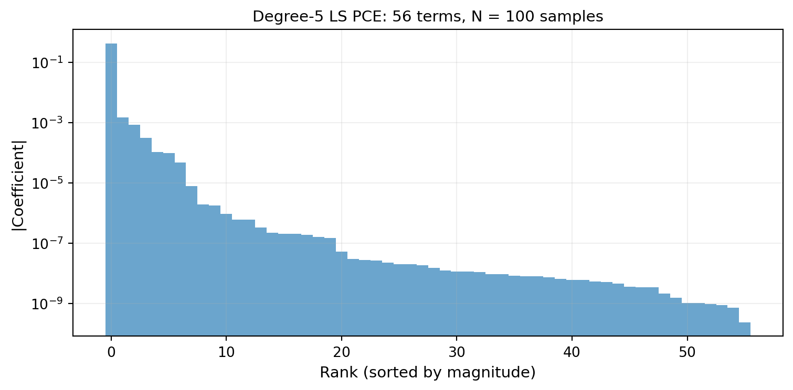
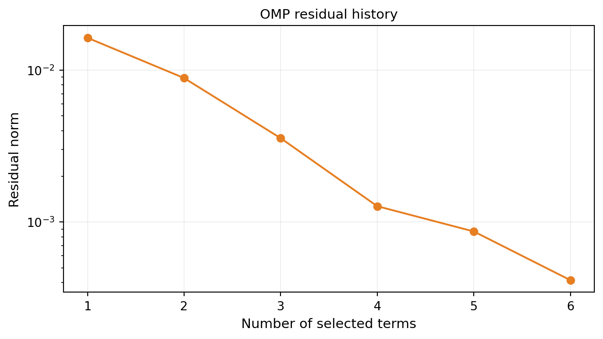
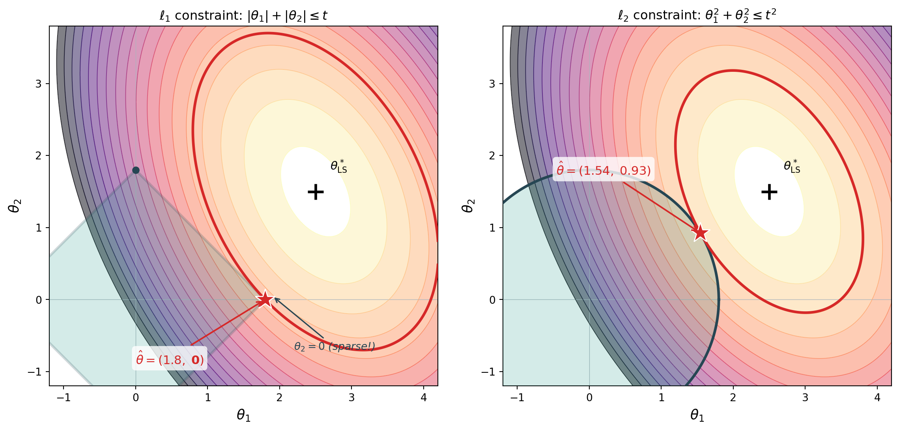
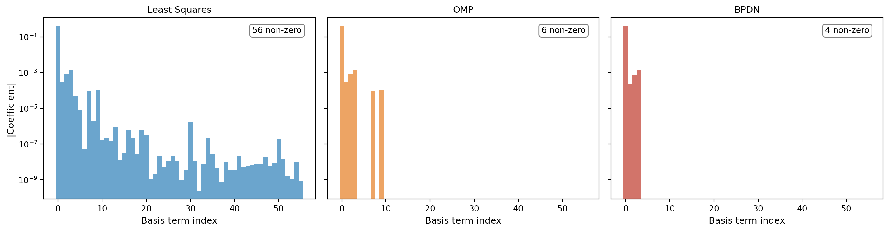
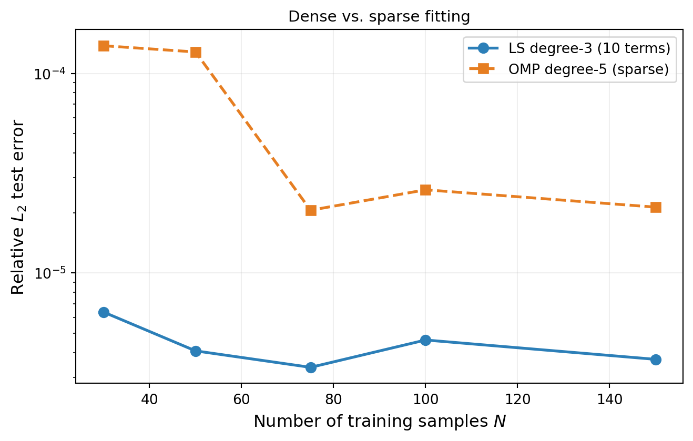

import numpy as np
import matplotlib.pyplot as plt
from pyapprox.util.backends.numpy import NumpyBkd
from pyapprox.benchmarks.instances import cantilever_beam_2d_linear
from pyapprox.surrogates.affine.indices import (
compute_hyperbolic_indices,
)
from pyapprox.surrogates.affine.expansions.pce import (
create_pce_from_marginals,
)
from pyapprox.surrogates.affine.expansions.fitters.least_squares import (
LeastSquaresFitter,
)
from pyapprox.benchmarks.instances.pde.cantilever_beam import MESH_PATHS
bkd = NumpyBkd()
ls_fitter = LeastSquaresFitter(bkd)
benchmark = cantilever_beam_2d_linear(bkd, num_kle_terms=1, mesh_path=MESH_PATHS[4])
model = benchmark.function()
prior = benchmark.prior()
marginals = prior.marginals()
nvars = model.nvars()
nqoi_full = model.nqoi()
qoi_labels = [r"$\delta_{\mathrm{tip}}$", r"$\sigma_{\mathrm{tot}}$"]Sparse Polynomial Approximation
PyApprox Tutorial Library
OMP and BPDN/LASSO for high-dimensional polynomial chaos.
TipDownload Notebook
Learning Objectives
After completing this tutorial, you will be able to:
- Explain why sparsity matters in high-dimensional polynomial expansions
- Apply Orthogonal Matching Pursuit (OMP) to select important basis terms
- Apply BPDN/LASSO (L1-regularized least squares) for sparse coefficient recovery
- Compare the accuracy and sparsity of least-squares, OMP, and BPDN fitters
- Choose between sparse and dense fitters based on problem dimensionality
Prerequisites
Complete Building a Polynomial Chaos Surrogate and Overfitting and Cross-Validation before this tutorial.
Setup
We use the same 2D cantilever beam benchmark with \(d = 3\) uncertain parameters. Because the sparse fitters currently support only a single QoI, we work with just the first QoI (tip deflection) throughout this tutorial.
# Training data
N_train = 100
np.random.seed(42)
samples_train = prior.rvs(N_train)
values_full = model(samples_train) # (nqoi, N_train)
values_train = values_full[0:1, :] # (1, N_train) --- tip deflection only
# Test data
N_test = 500
np.random.seed(123)
samples_test = prior.rvs(N_test)
values_test_full = model(samples_test)
values_test = values_test_full[0:1, :] # (1, N_test)
vals_test_np = bkd.to_numpy(values_test)
Notenqoi restriction
The sparse fitters (OMPFitter, BPDNFitter) currently support only nqoi=1. For multi-QoI problems, fit each QoI separately.
Why Sparsity Matters
For a total-degree polynomial basis in \(d\) variables at degree \(p\), the number of terms grows as \(\binom{d + p}{p}\). This combinatorial explosion makes standard least-squares fitting infeasible in high dimensions:
for d in [3, 5, 10, 20]:
for p in [3, 5, 7]:
_ = compute_hyperbolic_indices(d, p, 1.0, bkd).shape[1]For \(d = 10\) at degree 5, a standard least-squares fit would require at least \(2 \times 3003 = 6006\) training samples. But in many applications, the true model depends primarily on a small subset of the basis terms — most coefficients are negligibly small. Sparse recovery methods exploit this structure to produce accurate approximations with far fewer samples.
Coefficient Magnitudes of a Fitted PCE
To see sparsity in action, let’s fit a least-squares PCE at degree 5 and examine the coefficient magnitudes:
from pyapprox.tutorial_figures._pce import plot_coefficient_decay
degree_large = 5
pce_ls = create_pce_from_marginals(marginals, degree_large, bkd, nqoi=1)
nterms_large = pce_ls.nterms()
ls_result = ls_fitter.fit(pce_ls, samples_train, values_train)
coef_ls = bkd.to_numpy(ls_result.params())[:, 0]
sorted_abs = np.sort(np.abs(coef_ls))[::-1]
fig, ax = plt.subplots(figsize=(8, 4))
plot_coefficient_decay(sorted_abs, degree_large, nterms_large, N_train, ax)
plt.tight_layout()
plt.show()
The rapid decay in coefficient magnitudes shows that only a handful of terms carry most of the information. This motivates sparse fitters that identify and retain only the important terms.
Orthogonal Matching Pursuit (OMP)
OMP is a greedy algorithm that builds the active set one term at a time:
- Find the basis term most correlated with the current residual
- Add it to the active set
- Re-solve the least-squares problem restricted to the active set
- Repeat until the residual is small enough or the maximum number of terms is reached
from pyapprox.surrogates.affine.expansions.fitters.omp import OMPFitter
pce_omp = create_pce_from_marginals(marginals, degree_large, bkd, nqoi=1)
omp_fitter = OMPFitter(bkd, max_nonzeros=15, rtol=1e-4)
omp_result = omp_fitter.fit(pce_omp, samples_train, values_train)The residual history shows how the fit improves as terms are added:
from pyapprox.tutorial_figures._pce import plot_omp_residual
res_hist = bkd.to_numpy(omp_result.residual_history())
fig, ax = plt.subplots(figsize=(7, 4))
plot_omp_residual(res_hist, ax)
plt.tight_layout()
plt.show()
Why Does L1 Promote Sparsity?
Before applying BPDN, it helps to understand geometrically why the \(\ell_1\) penalty drives coefficients to exactly zero while the more familiar \(\ell_2\) penalty does not.
Consider a simple model with two coefficients \(\theta_1, \theta_2\). The unconstrained least-squares solution is \(\theta^*_{\mathrm{LS}} = (2.5, 1.5)\). The contours of the least-squares objective \(J(\theta) = \|\Phi\theta - y\|_2^2\) are ellipses centred on \(\theta^*_{\mathrm{LS}}\).
Now impose a budget constraint \(\|\theta\|_p \leq t\) with \(t = 1.8\). The constrained solution is the point inside the constraint region that minimises \(J\) — equivalently, the first contour of \(J\) that touches the constraint boundary.
The geometry of the constraint region is the key:
The \(\ell_1\) constraint \(|\theta_1| + |\theta_2| \leq t\) is a diamond with sharp corners on the coordinate axes. As we expand the elliptical contours outward from \(\theta^*_{\mathrm{LS}}\), they almost always first touch the diamond at one of these corners — a point where one coordinate is exactly zero. The solution is sparse.
The \(\ell_2\) constraint \(\theta_1^2 + \theta_2^2 \leq t^2\) is a circle with no corners. The contours touch the circle on its smooth boundary, generically at a point where both coordinates are nonzero. The solution shrinks coefficients but does not zero them out.

This geometry extends to higher dimensions. In \(P\)-dimensional coefficient space, the \(\ell_1\) ball is a cross-polytope with \(2P\) vertices, all on the coordinate axes. Every vertex has \(P - 1\) coordinates exactly equal to zero. Edges, faces, and higher-dimensional facets also lie on coordinate subspaces. An ellipsoidal objective contour expanding outward from \(\theta^*_{\mathrm{LS}}\) will generically first touch the polytope on a low-dimensional face, producing a solution with many zero components.
For a PCE with hundreds or thousands of candidate terms, this means the BPDN/LASSO solution retains only the handful of basis functions that contribute most to explaining the training data — exactly the sparsity we want.
Basis Pursuit Denoising (BPDN / LASSO)
BPDN solves the L1-regularized least-squares problem:
\[ \hat{\mathbf{c}} = \arg\min_{\mathbf{c}} \frac{1}{2}\|\boldsymbol{\Phi}\mathbf{c} - \mathbf{y}\|_2^2 + \lambda \|\mathbf{c}\|_1 \]
The L1 penalty encourages sparsity by driving small coefficients to exactly zero. The regularization strength \(\lambda\) controls the trade-off between fit quality and sparsity.
from pyapprox.surrogates.affine.expansions.fitters.bpdn import BPDNFitter
pce_bpdn = create_pce_from_marginals(marginals, degree_large, bkd, nqoi=1)
bpdn_fitter = BPDNFitter(bkd, penalty=0.01)
bpdn_result = bpdn_fitter.fit(pce_bpdn, samples_train, values_train)Comparing Coefficient Sparsity
Figure 4 compares the coefficient magnitudes from least squares, OMP, and BPDN. The sparse fitters zero out unimportant terms while retaining the dominant ones.
from pyapprox.tutorial_figures._pce import plot_sparse_coefficients
fitter_names = ["Least Squares", "OMP", "BPDN"]
results = [ls_result, omp_result, bpdn_result]
fig, axes = plt.subplots(1, 3, figsize=(15, 4), sharey=True)
plot_sparse_coefficients(results, fitter_names, bkd, axes)
plt.tight_layout()
plt.show()
Accuracy Comparison
Despite using far fewer coefficients, the sparse fitters can match or beat the full least-squares fit:
for name, result in zip(fitter_names, results):
preds = bkd.to_numpy(result.surrogate()(samples_test))
l2_err = np.linalg.norm(vals_test_np[0, :] - preds[0, :])
l2_ref = np.linalg.norm(vals_test_np[0, :])
n_nz = np.sum(np.abs(bkd.to_numpy(result.params())[:, 0]) > 1e-12)The advantage of sparse methods becomes more pronounced when the training budget is limited relative to the number of basis terms. Figure 5 compares a standard degree-3 least-squares fit (10 terms, safe oversampling) against a degree-5 OMP fit (many candidate terms but sparse selection) as the training size increases:
from pyapprox.tutorial_figures._pce import plot_accuracy_vs_n
N_values = [30, 50, 75, 100, 150]
ls3_errors = []
omp5_errors = []
for N_tr in N_values:
np.random.seed(500 + N_tr)
s_tr = prior.rvs(N_tr)
v_tr = model(s_tr)[0:1, :]
# LS degree-3
pce3 = create_pce_from_marginals(marginals, 3, bkd, nqoi=1)
nterms3 = pce3.nterms()
if N_tr > nterms3:
ls3 = ls_fitter.fit(pce3, s_tr, v_tr).surrogate()
p3 = bkd.to_numpy(ls3(samples_test))
e3 = np.linalg.norm(vals_test_np[0] - p3[0]) / np.linalg.norm(vals_test_np[0])
else:
e3 = np.nan
ls3_errors.append(e3)
# OMP degree-5
pce5 = create_pce_from_marginals(marginals, 5, bkd, nqoi=1)
omp5 = OMPFitter(bkd, max_nonzeros=15, rtol=1e-4)
omp5_res = omp5.fit(pce5, s_tr, v_tr).surrogate()
p5 = bkd.to_numpy(omp5_res(samples_test))
e5 = np.linalg.norm(vals_test_np[0] - p5[0]) / np.linalg.norm(vals_test_np[0])
omp5_errors.append(e5)
fig, ax = plt.subplots(figsize=(7, 4.5))
plot_accuracy_vs_n(N_values, ls3_errors, omp5_errors, ax)
plt.tight_layout()
plt.show()
Key Takeaways
- In high dimensions, the number of polynomial basis terms grows combinatorially, but many coefficients are negligibly small — the expansion is approximately sparse
- OMP greedily selects the most important terms one at a time; it is simple, interpretable, and requires no tuning of a regularization parameter (only
max_nonzerosandrtol) - BPDN/LASSO solves an L1-regularized least-squares problem; the penalty \(\lambda\) trades off fit quality and sparsity
- Sparse fitters can use high-degree basis sets (many candidate terms) without needing a correspondingly large training set
- When most coefficients are near zero, sparse methods achieve better accuracy with fewer samples than dense least-squares at the same degree
Exercises
Sweep the OMP
max_nonzerosparameter from 5 to 25. Plot the test-set error vs. number of selected terms. At what point do additional terms stop helping?Try different L1 penalty values for BPDN (e.g., 0.001, 0.01, 0.1, 1.0). How does the penalty affect the number of non-zero coefficients and the test-set error?
Fit OMP on each QoI separately (tip deflection and total stress). Compare the support sets — do both QoIs select the same basis terms?
(Challenge) Increase the problem dimension by using
num_kle_terms=3in the benchmark (giving \(d = 9\) variables). Fit a degree-5 PCE with OMP and compare to least-squares degree-3. How does the advantage of sparsity change in higher dimensions?
Next Steps
Continue with:
- UQ with Polynomial Chaos — Using the fitted PCE to compute moments and marginal densities